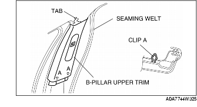

B-pillar upper trim removal/installation
1. Remove the upper anchor of the front seat belt.
2. Partially peel back the seaming welt.
3. Remove the B-pillar lower trim. (See B-PILLAR LOWER TRIM REMOVAL/INSTALLATION.)
4. Pull the B-pillar upper trim outward, then disengage clips A.

5. Disengage the tab from the body, then remove the B-pillar upper trim.
6. Install in the reverse order of removal.